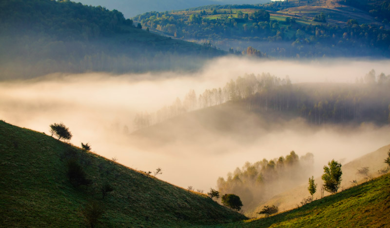
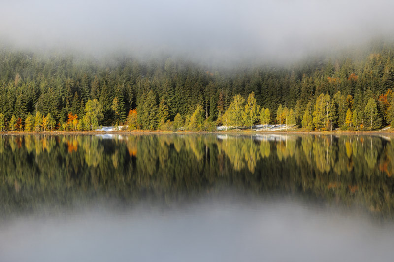

Societatea comercială CATA-TOUR S.R.L a fost înfiinţată în anul 2006 şi are ca obiect de activitate, prestarea de servicii turistice pentru agenţia de turism AVANTAJ TOUR. Este posesoarea licenţei de turism tour-operatoare 4204/14.12.2006, obţinută în baza brevetului de turism al doamnei Stoian Rodica Nicoleta cu nr. 6216 din 09.04.2002. Agenţia de turism îşi desfăşoară activitatea în sediul propriu din bulevardul George Enescu, nr 12, BL Belvedere, sc C, Ap 3, Suceava. Amplasarea favorabilă a sediului, la intersecţia bulevardului George Enescu cu strada Universitatii, cu o bună vizibilitate, cu o circulatie pietonală intensă, iar posibilităţile de parcare şi accesul direct din stradă reprezintă unul din avantajele agenţiei noastre. Mobilierul agenţiei constă în birouri pentru fiecare agent, cu scaune confortabile pentru clienţi, în vederea discutării programelor turistice într-o ambianţă cât mai plăcută. Pentru prezentarea programelor turistice şi o bună vizualizare a structurilor de cazare, computerele sunt conectate la o plasmă. Călătoria dumneavoastră trebuie să fie una sigură, eficientă şi comodă. Echipa Cata-Tour s-a gândit la acest lucru, iar misiunea noastră este de a crea o vacanţă de neuitat.
Deoarece timpul are un rol esenţial în viaţa fiecăruia, echipa Cata-Tour acceptă comenzi şi modificări de ultim moment, încercând totodată să ofere clienţilor noştri, soluţia optimă în timpul cel mai scurt. Echipa Cata-Tour doreşte să asigure clienţilor o ofertă bine structurată, care să acopere totodată cele mai exigente gusturi şi preferinţe. Produsele Cata-Tour satisfac cerinţele mai multor tipuri de turişti: de la produsele culturale destinate unui segment de piaţă mai matur, la produsele tip "party" speciale pentru tineri. Agentia oferă clienţilor toate informaţiile de care au nevoie, prezentându-le o mulţime de detalii (texte şi fotografii) despre vacanţă şi totodată le oferă posibilitatea de a face rezervări on-line. Beneficiind de aportul unui colectiv tânăr, dinamic, cu experienţă în domeniul turismului, agenţia s-a impus în scurt timp ca un partener de încredere atât pentru clienţii săi, cât şi pentru firmele de turism. În dorinţa de a oferi clienţilor şi colaboratorilor noştri, servicii de cea mai bună calitate şi echilibrate din punct de vedere al bugetului, am realizat un parteneriat foarte bun cu hoteluri, vile, restaurante, transportatori şi agenţii de turism, atât din ţară, cât şi din străinătate, astfel încât putem organiza cu succes orice acţiune sau excursie al căror program este stabilit de clienţii noştri.
Oferta agenţiei Cata-Tour:
În completarea ofertelor noastre, colaborăm cu tour-operatori cu experienţă în domeniu, astfel încât să putem oferi clienţilor noştri orice pachet de servicii turistice şi bilete de avion pentru orice destinaţie. În acest sens menţionăm următorii tour-operatori şi companii aeriene cu care lucrăm prin comenzi on-line: Christian Tour, Interra, Paralela 45, Cocktail Holidays, Fibula, Omnia Turism, Europa Travel, Nova Travel, TUI, Blue Air, Wizz Air, Ryan Air, Hotelcon, Mondial Assistance etc.
CATA-TOUR